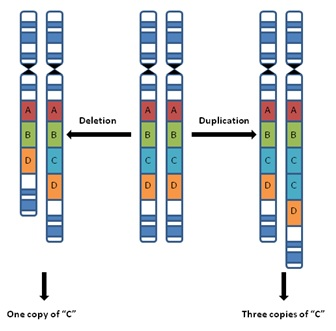
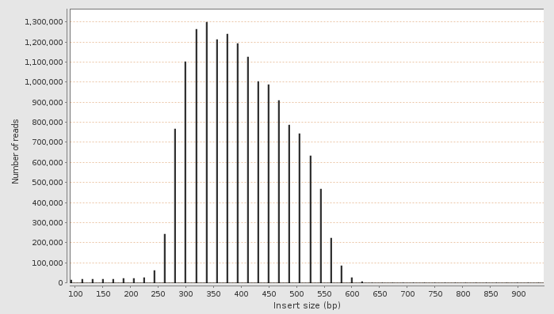

Copy Number Variation Detection Using Next-gen Sequencing
Yuling Liu
Copy Number Variation

“
Copy number variation has been associated with cancer, autism,
schizophrenia, and idiopathic learning disability
”
Input: Detection Techniques
The problem
-
Read vector: $R = \{r_1, r_2, \ldots, r_N\}$, $N \sim 10^9$
# of reads in the library
-
Copy vector: $C = \{c_1, c_2, \ldots, c_K\}$, $K \sim 3\times
10^9$ length of the genome
-
Model prior: $M_0$, prior belief of the “world”,
imposes smoothness of $C$ and includes the knowledge of
the sequencing process
-
Solve the MAP problem:
$$\arg\max_{M} \sum_C P(C, R \mid M_0, M)$$
-
Denoising problem, $R$ is a
noisy measure
of $C$, otherwise $C$ is simply normalized coverage
-
Actual output: break point
One Baseline Algorithm: HMM
-
Assumption: $P(c_k|c_1, c_2, \ldots, c_{k-1}) = P(c_k|c_{k-1})$
-
Coverage (emission) is a noisy measure of copy number (latent
variable)
-
$P(c_k = c_{k+1}) >> P(c_k \neq c_{k+1})$, force smoothness
-
Pros: Trivial learning algorithm - EM.
-
M: closed form estimator (multinomial)
-
E: VE or BP, exact and runtime in P
-
Cons: Naive
CNVeM: Copy Number Variation Detection Using
Uncertainty of Read
Mapping
Wang, Z. et al.
Intuition: Balance
-
Use anchor reads to place
ambiguous reads
- Could potentially fix sequencing errors
- Final placement of an ambiguous read is a balance of local
and contextual “happiness”
Formally...
-
Solve the MAP problem, the likelihood:
$$
\begin{aligned}
P(R \mid \theta, M_0) &= \sum_{C} P(R, C \mid \theta, M_0) \\
&= \sum_{C} P(R \mid C, \theta, M_0)
P(C \mid \theta, M_0)
\end{aligned}
$$
-
Impose sensible smoothness (regularization on model complexity)
$$
P(C \mid \theta, M_0) = P(c_1) \prod_i P(c_i \mid c_{i-1})
$$
- Introduce new latent variables - true mapping for each reads: $Z=\{z_1, z_2,
\ldots, z_N\}$
-
$z_j$ indicates the locations to which $r_j$ could be mapped.
-
Inovation:
$$
\begin{aligned}
P(R \mid C, \theta, M_0) &= \prod_i P(r_i \mid C, \theta, M_0) \\
&= \prod_i \sum_{z_i}
P(r_i, z_i \mid C, \theta, M_0) \\
&= \prod_i \sum_{z_i}
P(r_i \mid z_i, C, \theta, M_0)
P(z_i \mid C, \theta, M_0) \\
&= \prod_i \sum_{z_i}
P(r_i \mid z_i, M_0)
P(z_i \mid C, M_0)
\end{aligned}
$$
-
The simple alignment model $P(r_i \mid z_i, M_0)$: match contributes $1 - \epsilon$ and
dismatch contributes $\epsilon \mathbin{/} 3$
-
Based on the knowledge of sequencing experiments:
$$P(z_i \mid C, M_0) = P(z_i \mid c_i, M_0) \propto c_i$$
-
Learning algorithm is trivial if we look at the structure of the
MRF in which $P$ factorized...
Result
-
Simulation: no one cares about...
-
Real data: basically it's
good
Dectecting Copy Number Variation with Mated Short Reads
Medvedev, P. et al.
Intuition: Orthogonal Information
-
A waste if simply compressing all read info into coverage
-
The reads directly carries the
information
of break point
-
However the read info has even more noise (from
HTS
and alignment), e.g. $175k$ break points in chr1
-
Must find a way to combine coverage and read info
Insertion Size Distribution

Min-cost Flow Problem Formulation
-
Why min-cost flow?
-
$k_e$ observed coverage, $f_e$ latent coverage (flow).
$$
P(k_e \mid f_e) =
\frac{e^{-\lambda f_e l_e}(\lambda f_e l_e)^{k_e}}{k_e !}
$$
-
The problem:
$$
\begin{align}
\arg\max_{f} \prod_e P(k_e \mid f_e) &=
\arg\min_{f} \sum_e \lambda_e f_e l_e -
k_e \ln(\lambda_e f_e l_e)
\end{align}
$$
Subject to a set of linear constraint defined by the graph and
the property of “flow”
-
Convex optimization problem and thus in P
Why min-cost flow
-
The sample genome is a walk in the graph
-
However that's the same as genome assembly
-
Only need the traversal counts
-
Classical problem could be solved in P, e.g. linear programming